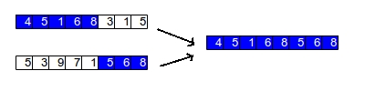
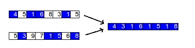
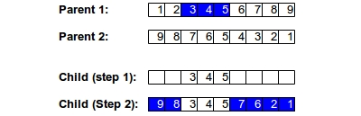
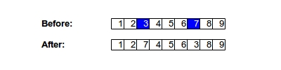

Genetic Algorithms
Genetic algorithms are a form of local search that mimic—and are inspired by—the process of natural selection. The algorithm begins by generating a series of candidates in a population of size n. You can seed this population with pre-made candidates, but it is more common to just generate random candidates so that you cover a diverse range of options within the search space. The representation of each individual solution within the population is often referred to as a chromosome. The individual values of each chromosome are sometimes referred to as genes.
Once you have setup an initial population, you iterate the algorithm until a stopping condition is met. At each iteration, you generate n "children" to fill the next generation. Children are generated through a two part process:
- Crossover- The process of taking two parent chromosomes and combining them together to produce a child
- Mutation- The child generated through crossover is randomly perturbed to generate a "mutated" individual
Crossover
There are several variants of crossover (also known as recombination), but they all involve mixing two parent chromosomes together to generate offspring. Typically, these parents are selected probabilistically from the population, with higher fitness individuals in the population having a higher chance of being selected to breed each child. As with many real life examples of natural selection, high fitness individuals are likely to have multiple children in the next generation, while low fitness individuals may not get a chance to breed at all. In the finch implementation of this algorithm, individuals are selected with a probability based on their position in an ordered pool, not based on actual fitness values.
In one-point crossover, a single spot is randomly picked to slice both parent chromosomes. The child is then generated using one side of the slice from the first parent and the other side of the slice from the second parent. The figure below shows an example of this:
In uniform crossover, you go through each chromosome and then randomly select from each of the parents for each individual gene. The figure below shows this process:
Occasionally, problems are represented in ways that makes crossover a difficult process. For example, if you are optimizing the travelling salesman problem, then your representation of a chromosome might be an ordering of cities to visit. In this case, ordered crossover is necessary. In this process, we select a subset from the first parent and add that subset to our child. Then, we add genes that are not yet in the child using the second parent's order. The figure below shows this two step process:
Mutation
In the most commonly used mutatation algorithm, each gene in the child is iterated through and at each iteration, a random number r (where 0 < r < 1.0) is generated. If r is less than the user provided mutation rate, then that gene is randomly changed to another valid value. However, this doesn't always work. As with crossover, you might have cases such as the travelling salesman problem where each gene must be unique. If that is the case, then swap mutation can be used, whereby two genes are simply switched with each other, as in the figure below:
Additional notes
Generally, crossover is the main methodology used for improving solutions in genetic algorithms, with mutations used to keep the population pool diverse and to prevent the algorithm from getting stuck at local minima for too long, although this is subject to debate since some implementations of the algorithm rely heavily on mutations to improve the fitness function.
One issue with genetic algorithms is that the best solutions are lost from one generation to the next. To prevent this, sometimes an elitism strategy is used, where a specified number of the top solutions will always be cloned into the next generation without crossover or mutation. Of course, doing this often causes the population to become less diverse and therefore more likely to get stuck on local maxima, but a modest elitism strategy often leads to better overall solutions for many problems.
Finch implementation
The finch implementation of genetic algorithms allows you to pass in crossover and mutation algorithms. It also allows you to specify population size and the number of elite individuals to pass from each generation to the next. The stopping condition on this algorithm happens when a user specified number of iterations have passed.
The finch function for genetic algorithms has the following signature:
func genetic_algorithm(population_size int, evaluate func([]int) float64,
create_random func() []int , mutate func([]int, float64) []int,
crossover func([]int,[]int) []int, mutation_rate float64,
num_iterations int, num_elite int)
The function takes in the following parameters:
- population_size - The number of individuals in the population at each generation
- evaluate - A function that you must construct and pass in which takes a state of type int[] as a parameter and returns a fitness score for the given state of type float64
- create_random - A function that you must construct and pass in which takes no parameters and returns a 1-dimensional array of type int[] containing a random starting state for your problem
- mutate - A function that you must construct and pass in which takes a state of type int[] as a parameter and returns a "mutated" array of type int[]
- crossover - A function that you must construct and pass in which takes two states of type int[] as parameters and returns a child of type int[] which is a result of the crossover algorithm in this function
- mutation_rate - A value between 0.0 and 1.0 for the mutation rate. Typical values are between 0.01 and 0.10
- num_iterations - The number of iterations to run the algorithm for
- num_elite - The number of elite individuals that should automatically pass from one generation to the next without mutation or crossover
The function returns two values:
- The state found with the highest fitness score (type []int)
- The fitness score at this state (type float64)